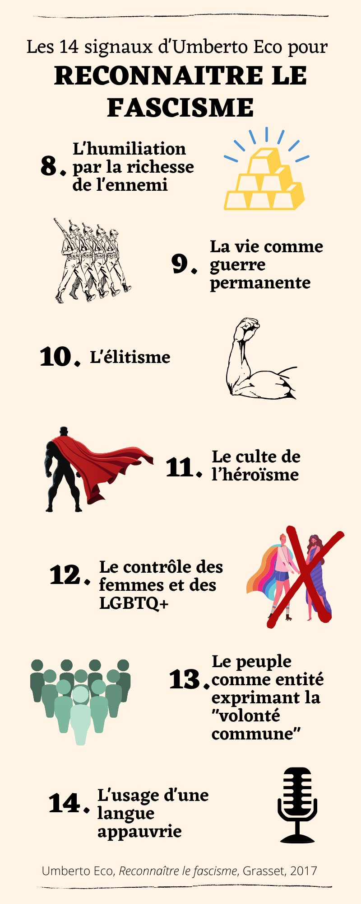
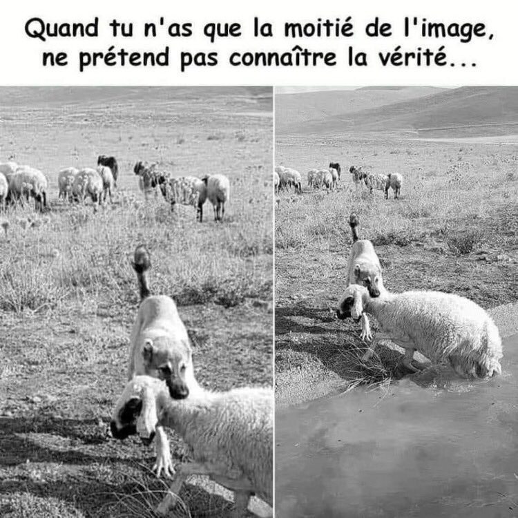

<p>Les 14 signes pour reconnaître un mouvement ou une proposition
fasciste selon Umberto Eco</p>
<p></p>
<p></p>
<figure>

<figcaption aria-hidden="true">image</figcaption>
</figure>
<h1 id="bibliographie">bibliographie</h1>
